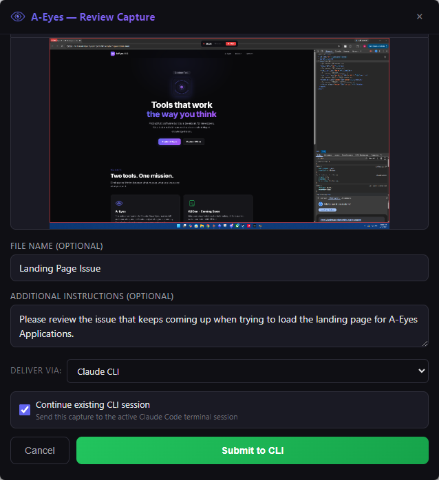
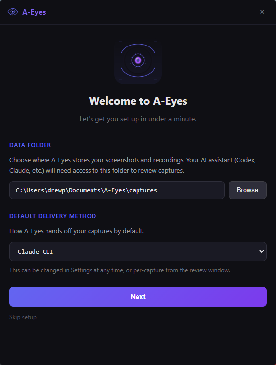
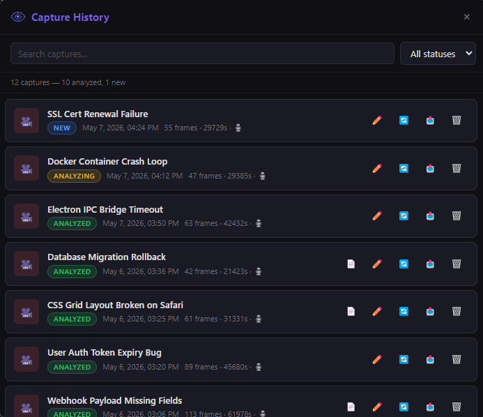

The sidecar your AI agent was missing. Record your screen, narrate what's happening, and hand it directly to your AI for analysis. Dead simple to use and built to speed up your workflow so you spend less time explaining and more time building.

Hit a hotkey or click record. A-Eyes captures your screen intelligently and you can narrate with your mic as you go to give your AI agent full context.
Name your capture, add quick annotations if you want, and pick where it goes. Desktop, CLI, or queued for later.
A-Eyes delivers your capture directly to your AI agent. Frames, transcript, and notes all land in one shot. No copy-pasting, no file juggling, no extra prompting.
Clean, intuitive UI that gets out of your way and lets you focus on the work.

Pick your data folder, choose a delivery method, and you're recording in under a minute.

Every capture tracked with status, duration, and frame count. Search, filter, and manage your entire queue.
Built for developers and power users who want AI that can actually see their work.
A-Eyes captures your screen efficiently, only grabbing what matters when something changes. Full coverage of your workflow without wasting space or slowing you down.
Talk through what you're doing while you record. A-Eyes transcribes your audio automatically and syncs it with your screen captures so your AI gets the full picture.
A-Eyes detects your open AI agent and delivers your capture automatically. No switching windows, no pasting, no typing. Just record and go.
Need a one-off? Snip a region of your screen, annotate it, and fire it over to your AI for a fast answer. Perfect for quick questions mid-workflow.
All your captures are tracked and organized with status updates. Your AI agent can see your full queue at a glance and work through them in order.
Send captures to Cowork or Codex, pipe them into the CLI, or queue them for batch review later. However you work with your AI, A-Eyes fits right in.
Everything stays on your machine. Captures are stored locally, audio is transcribed locally, and nothing is sent to any external server. Your AI only sees what you explicitly choose to send.
Runs natively on both Windows and Mac. Lives in your system tray, launches with a global hotkey, and stays out of your way until you need it.
No subscriptions, no feature gates, no nonsense. Pay once, use it forever.
A-Eyes never sends your screenshots, recordings, or audio to any external server. Everything is captured, stored, and transcribed locally on your machine. Your AI agent only sees what you explicitly choose to send, through the same tools you already use and trust. There is no A-Eyes server, no telemetry, no analytics. Your screen is your business.